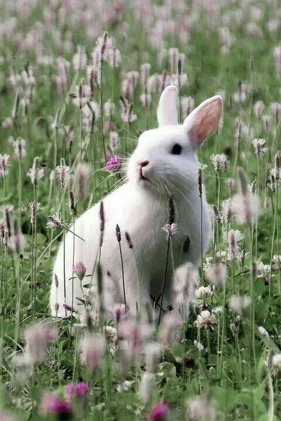

HTML Images
Fans of Bugs Bunny have speculated on darker interpretations of the iconic trickster. One theory suggests that Bugs Bunny is aware of the audience and the passage of time in his world, exploiting every opportunity to assert control over those around him, sometimes in cruel orx unsettling ways. In this view, his pranks on characters like Elmer Fudd or Yosemite Sam reveal a calculated amusement in others, suffering, rather than innocent mischief. Another theory interprets Bugs' immortality and constant escape from danger as evidence that he transcends the natural order, almost like a force guiding the chaotic universe of Looney Tunes.
Some fans even suggest that Bugs Bunny's existence could symbolize the inevitability of trickery and chaos in life, embodying both a playful and terrifying omnipresence, where no character is truly safe from his cunning maneuvers. These darker fan theories turn a well-loved cartoon rabbit into an enigmatic figure whose humor masks a subtle, unsettling awareness of power and control.
RABIT HOLE AWD
RABIT HOLE
WWF's goal is to:Build a future where people live in harmony with nature.
CSS is a language that describes the style of an HTML document.